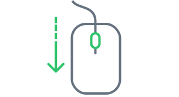

<ui-base-modal>
  <div class="activate-modal">
    <div>
      <div class="activate-modal__title">
        Aктивация голосования
      </div>

      
      

      <div class="activate-modal__text-helper">
        Пролистайте вниз и ознакомьтесь со всеми представленными вариантами.
      </div>

      <div class="activate-modal__sub-text">
        Это необходимо для обеспечения правильного избирательного процесса голосования.
      </div>
    </div>

    <div class="grid grid-justify-center w-100-p">
      <ui-button (click)="start()">Продолжить</ui-button>
    </div>
  </div>
</ui-base-modal>
